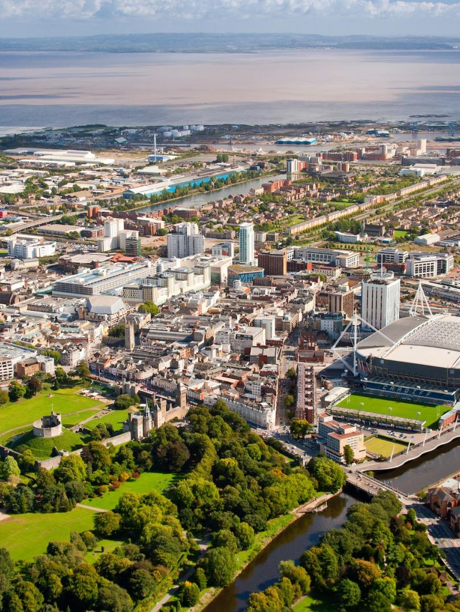
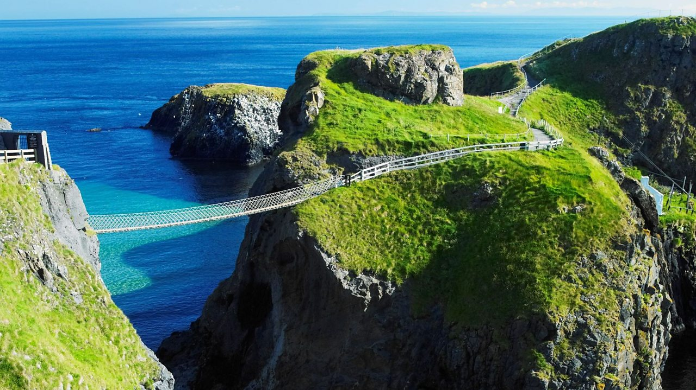

|
|
Home Page | Culture | Food | Summary in Spanish | Monarchy | About Us | Contact Us |
United Kingdom
| The United Kingdom is a sovereign state that includes four countries: England, Scotland, Wales, and Northern Ireland. Although the UK is a unitary sovereign country, it contains three distinct legal jurisdictions in Scotland, England and Wales, and Northern Ireland, each retaining its own legal system even after joining the UK. Northern Ireland shares a land border with the Republic of Ireland. |
|
England It is the largest country in the UK and is located in the southeast part of the island of Great Britain. It is known for its rich history, including the Tudor and Victorian eras, and is home to many famous landmarks such as Stonehenge, the Tower of London, and Buckingham Palace. |
|
Wales It is located in the southwest part of Great Britain and is known for its rugged coastline, mountains, and castles. The Welsh language is still spoken in many parts of the country, and Cardiff is the capital city. |
 |
 Nothern Ireland
It is located in the northeast part of the island of Ireland and is known for its stunning landscapes, including the Giant's Causeway and the Mourne Mountains. Belfast is the capital city and is home tomany famous landmarks such as the Titanic Belfast museum and the Crumlin Road Goal.
Population: 66.8 million people (in 2020)
Area: 242,900 km²
Capital: London
Ethnic Groups: White (of which English 83.6%, Scottish 8.6%, Welsh 4.9%, Northern Irish 2.9%) 92.1%, black 2%, Indian 1.8%, Pakistani 1.3%, mixed 1.2%, other 1.6%
Government: The United Kingdom is a unitary state with a constitutional monarchy